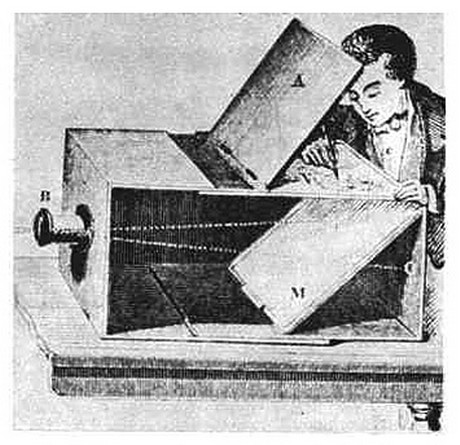
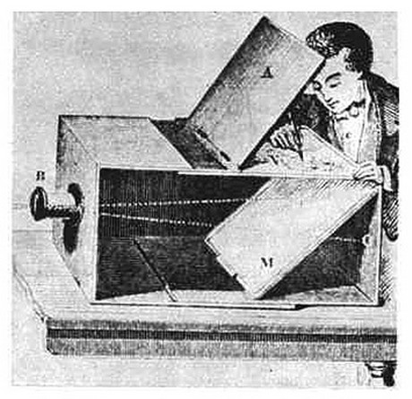
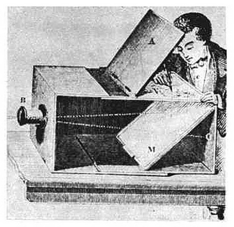
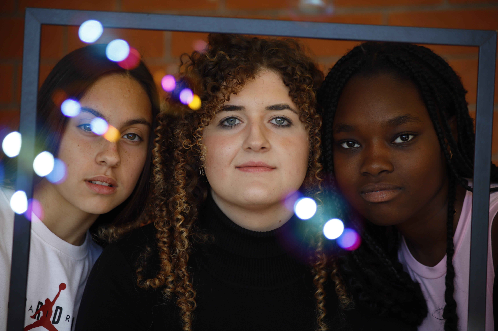
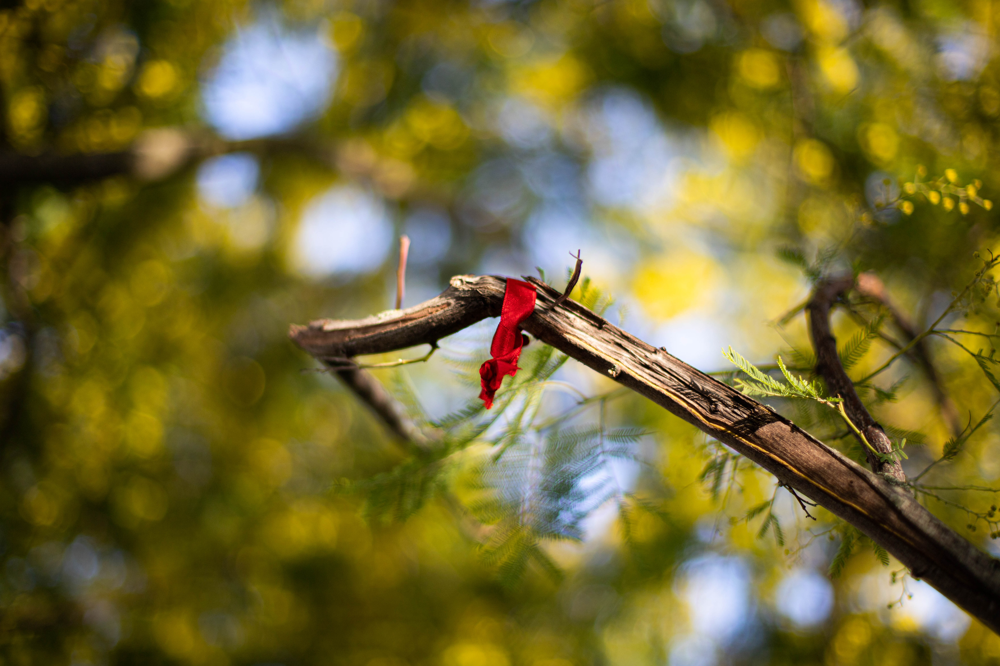
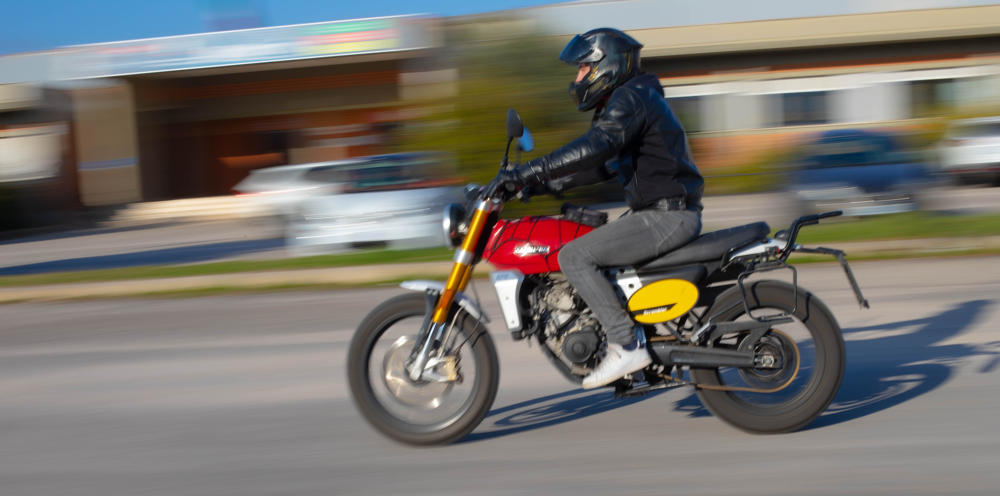
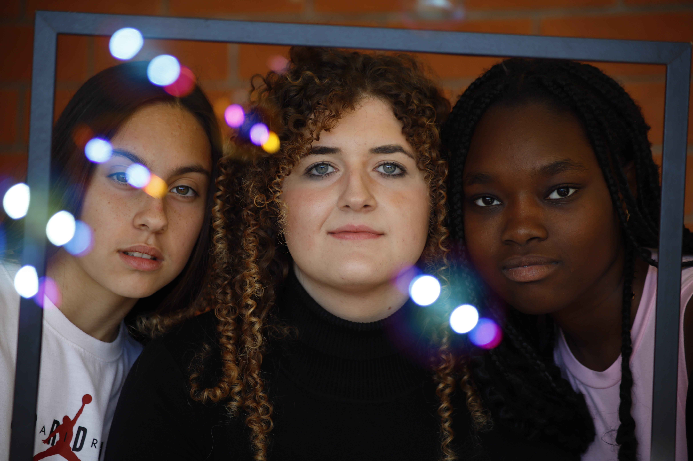
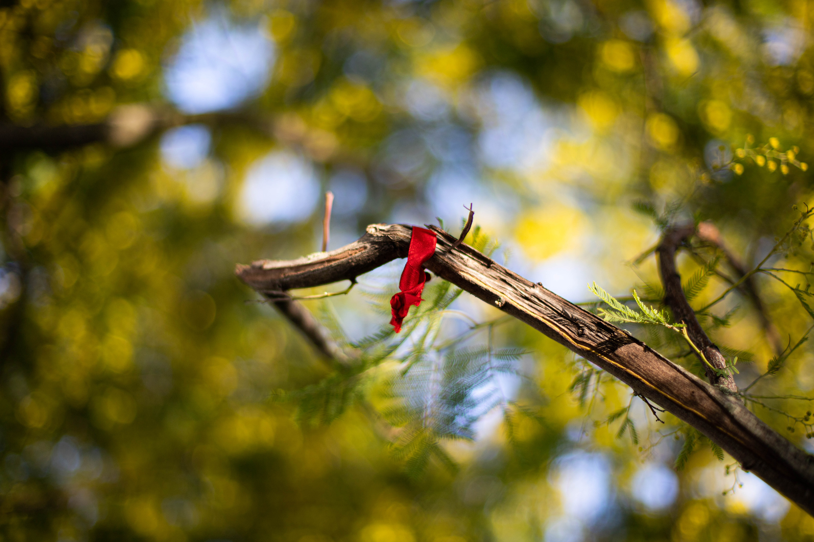
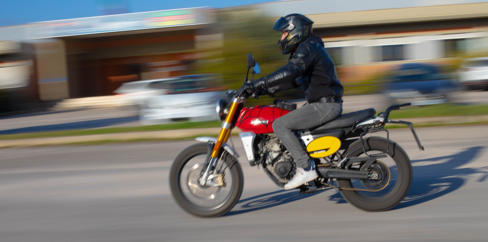

1839 年 8 月 19 日星期一被认为是摄影的诞生日，摄影在巴黎正式引入。
摄影的历史与暗箱的演变密切相关，暗箱证明了捕捉和固定图像中特定时刻的可能性。
暗箱的起源可以追溯到古代，其光学原理知识允许通过黑暗房间中的小孔观察倒立的图像。
然而，直到文艺复兴时期，暗箱才开始被用作一种艺术和科学工具，
艺术家似乎也使用类似的设备在他们的艺术作品中实现准确和详细的透视。
几个世纪以来，无数学者和科学家为暗箱的发展和完善做出了贡献。
但 17 世纪便携式暗室的发明标志着摄影诞生的重要一步。随着光学技术的进步和对化学过程的了解，
固定暗箱投射图像的实验开始形成。
便携式暗室的发明和对永久固定投影图像潜力的直觉代表了摄影史上的一个根本转折点。随后，
随着光学和化学技术的发展，暗室逐渐转变为日益精密且易于使用的相机，为现代摄影的诞生铺平了道路。

在这个项目中，P. Gesini教授展示了摄影和相机的历史，它是如何诞生的以及在哪里诞生的，
同时也重点关注了历史时期。当然，受我们学校的主要学习计划：信息技术的启发，
他展示了“相机”至今的功能和演变，说明了数码相机和模拟相机之间的差异。
课程涵盖不同的摄影主题和技术，在学习摄影基础知识的同时，
参与者能够获得不同类型的拍摄和技术的经验，例如长时间曝光、散景、平移和高速摄影。
在课程中，学生们不乏将照片、自然和历史背景结合起来的机会；在众多的现场体验中，
值得一提的是宁法花园之旅。
下面您可以看到在课程生动的课程中拍摄的一些照片。

 




